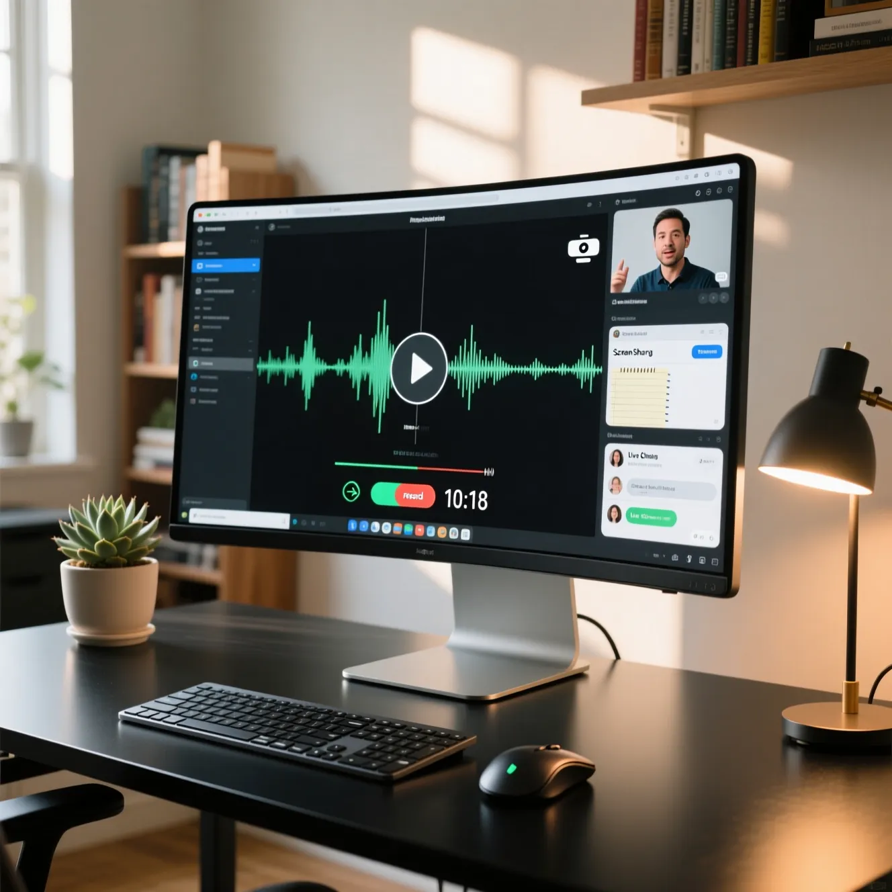
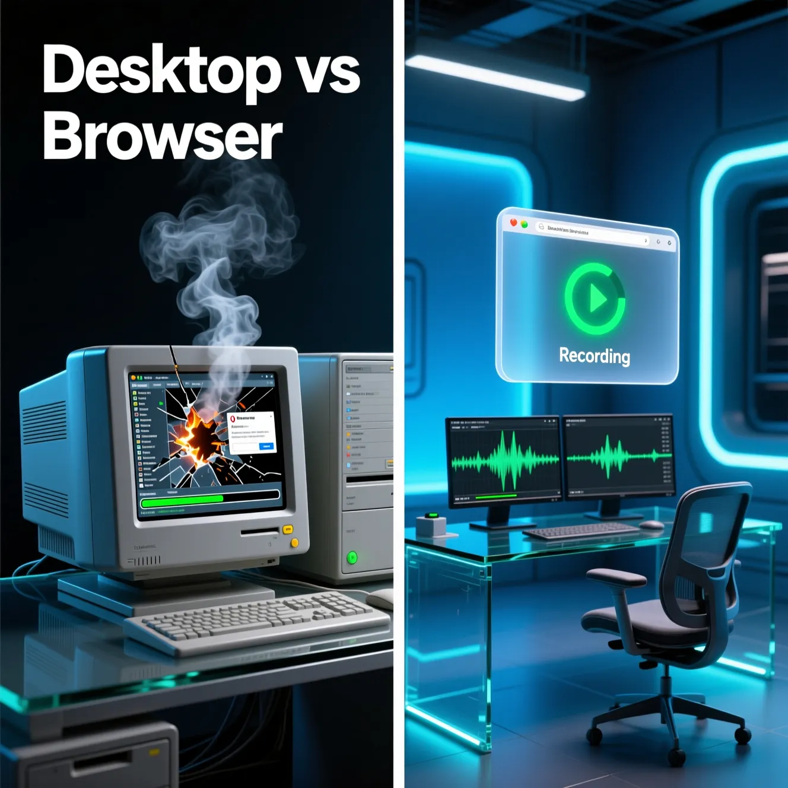
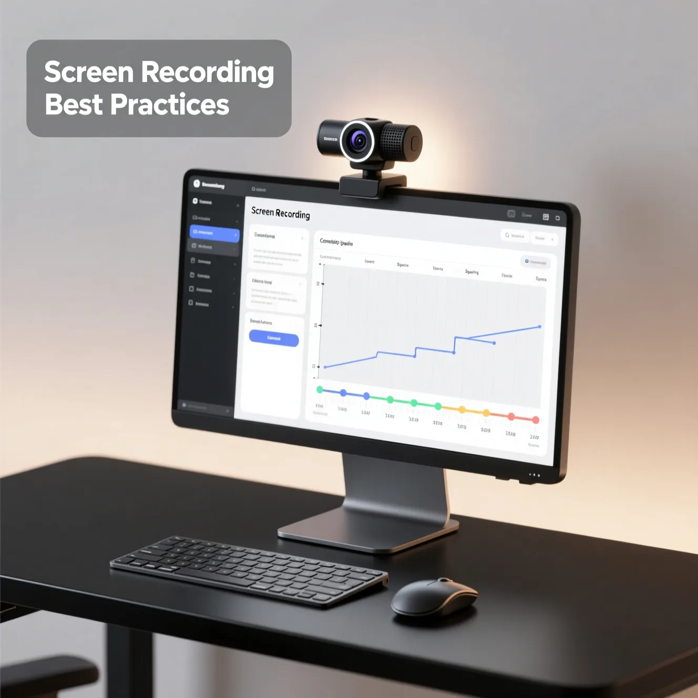

Screen Recorder — Capture, Share, and Create Professional Recordings With Ease
Record Tutorials, Meetings, Presentations, Gameplay, and Digital Workflows With a Modern Browser-Based Screen Recording Solution.
Written by JKM Edit Team
Published on May 18, 2026
9 min read

Introduction
Screen recording functionality has become essential in modern digital communication. Whether filming tutorials, recording professional presentations or sharing gameplay with friends, screen recording functionality has become an important part of how we communicate information in the digital age.
As businesses, educators, content creators, freelancers and remote teams increasingly communicate in the digital space, the ability to visually demonstrate workflows and processes has become an important part of communication. Written instructions are often not sufficient to explain a technical process, software usage, onboarding tasks or troubleshooting processes. A visual demonstration allows these processes to be better understood, therefore reducing confusion and improving learning efficiency.
The screen recorder is a tool that can completely capture what is going on your screen, including browser operation, workplace desktop, all kind of presentation, application, tutorial, online meeting or education experience. Some new screen recorder tools also support the recording of microphone audio, webcam overlay, system sounds, great flexibility, and annotations.
But most widely-used screen recording tools have complicated our recording experience in some ways by:
Large installation
Large CPU usage
Complex interface
Lots of advertising
Heavy performance
Confusing configuration
Uncompatible
JKM Edit Screen Recorder was created to save your recording experience from these complications, but still act as a professional recording tool.JKM Edit Screen Recorder operates on the principle of user-oriented, gentle design, lightness, and domestic practicality for modern users.
From the creation of educational courses, software tutorial recording, product presentation, training recording, remote collaboration, creative media recording or any other experience, JKM Edit Screen Recorder save you a lot of trouble in modern digital world.
What Is a Screen Recorder?
A screen recorder is a digital recording tool which can record what is on your screen. Some screens recording tools can also record system sounds, microphone voice, webcam overlay, system sounds, cursor movement, real-time annotations, application windows, browser tabs or even the whole desktop.
Screen recording has become popular in many fields and work settings – Online education, Technical Support, Corporate training, Gaming, Product Marketing, Product Demos, Digital Marketing, Remote Collaboration, Software Tutorials, Presentation Recordings, Workflow Capture.
With a screen recorder, users can express their idea better through visually showing the information instead of text.
Why Is Screen Recording So Important Today
The way we communicate has changed dramatically over the past few years in the age of digital communications. Remote working, online education, cloud collaboration, digital content creation, there's no denying the increased demand for visual communication tools
Screen recording makes communication effective by:
Visually showing complex processes
Preventing confusion
Simplifying complex processes
Improving training
Enabling asynchronous communication
Enhancing learning
Improving efficiency
Reusing learning content
Instead of writing a long instruction on how to complete a task, users can simply capture the recorded process, and provide visual demonstration. This method allows communication to be more effective in both the educational space and the workplace.
Its smooth recording and professional workshop suit to be presenters and training.
OUR SOLUTIONS SOLVE CALENDAR MULTIMEDIA PROBLEMS
Our professional solutions improves the experience for modern browsers.
Browser Based service
Less software installation and upgrades. We serve the most popular browsers.
Professional user experience
In our user interface design, clean and accessibility gives the directors more value with better usability and efficiency.
Audio recording support
Support microphonic and system source audio narration recordings.
Boost lightweight workflow
Our workflow design will help to reduce unnecessary resource consumption.
Create digital content
We are drive the create digital learning materials. This is our core mission for teachers and trainers.
Business presentation
Record and produce onboarding, product demo and related training used content.
Multiple recording method
Record the tab, window, presentation, full desktop. The user can select different from the same platform.
Technical complexity eliminated
Make accessible, improve the experience.
Modern multimedia experience
We think about the efficiency and productiveness while using the multimedia.
Screen recording can be helpful to any professional
Teaching and Learning
In the classroom, teachers are recording lessons, course content, assignments, revision, and instructional videos. Visual teaching is a great aid to help learners understand concepts.
Business and Corporate Training
Companies record processes to use for employee induction, routinised workflow instruction, internal training, product walk-throughs and knowledge management. You can improve efficiency and effectiveness.
Technical Support
Often technical support teams demonstrate solutions. To make their support easier to use and remember save company support videos and document software issues for the future. Text instructions may be ineffective or stale.
Digital Content Creation
Digital creators record tutorials, software reviews, game play-through, reaction videos, product demos and educational content. Digital creators need to record at times.
Team Communication and Collaboration
Team members can asynchronously communicate without having to schedule meetings time and again. Rather than asking to run through something or demonstrate or give an update, team members can write about something by recording. More flexibility and productivity.
Why browser based recording?
Desktop software is often mired by long install time, large binary size, numerous updates, permissions, storage, compatibility and complex configuration. Browser based screen recording avoids all this work.
Benefits include:
Fast startup
Lightweight
Cross Device Access
Easy Onboarding
Lowered Technical Barriers
Ease of Access
Work Anywhere
JKM Edit focuses on accessibility and simplicity in workflow management.
So Why is JKM Edit Screen Recorder Safe As Any Of The Standards?
Clean Professional UI: JKM Edit is built around user usability, not confusing the user with a cluttered interface
Fast availability: with a modern web browser
Simple User Experience: Simple Workflow for Beginners and Professionals.
Lightweight: Zero effort Workflow for smoother performance.
Work Anywhere: JKM Edit Studio satisfies educational, technical and creative workflow requirements for work.
Heavy and complex configuration: Leave it to yourself and fiddle around with features until you actually find the functionality.
JKM Edit vs Other solutions
Feature
JKM Edit
Traditional Desktop Recorder
Generic Online Recorder
Browser Access
Yes
No
Yes
Lightweight Workflow
Yes
Often heavy resource
Medium
Easy Setup
Yes
Sometimes complex
Medium
Modern UI
Yes
Medium
Low
Professional Usability
High
Medium
Medium
User-friendly design
High
Medium
Low
Simplified workflow
Yes
Medium
Medium
Accessibility focus
High
Medium
Medium

Common problems with traditional desktop software
Weird for Screen Recording Tools. CPU usage, installation volume, complicated setting, remote updates, UI design, compatibility restriction, export lag, abundant ads, lag, etc., these 10 pain points are bothering users and restricting their productivity for half a century - it violates the "reduce friction" requirement.
Screen recording tools need to reduce uncategorized frustration, and become more accessible.
Recording tools must be about user experience.
Today users want to use tools fast, intuitively, reliably, convenienlty, smoothly, without interruptions and distractions. They expect to use tools with cross-device and professional design, and the workflow should be smooth, and stable. Recording tools must simplify recording workflow, design a clean UI without confusing users with some unexpected tricks.
Screen Recording Benefits in Education
Screen recording engine drives education in the era. It can highlight these inferred benefits to students and teachers:
Better Visual Learning Visual demonstration are easier for students to understand.
Rewatchable Class Students can rewatch tutorial video
Students can rewatch tutorial multiple times.
Flexibility of learning Students have the ability to learn at their own pace.
Scalable Education Remote Screen recording is flexible and scalable for remote learning and teaching.
Improved Knowledge Retention Research indicates that reading and visual learning are more effective in retaining knowledge.
Direct demonstration Teachers can directly demonstrate the software function and workflow by screen recording.
Digital content marketing and Media production application of screen recording applications
Screen recording in digital content marketing and media production software tutorials product demos website walkthroughs educational videos social media marketing customer onboarding and training materials
Video-Based Communications Only Professionals Are Using To Amplify Reach And Understanding.
Screen Recording Best Practices
Best-a practices for screen recording
screen recording best practice
clean digital workspace
good screen recording practice
decluttered desktop
presentation format
Plan Your Content
Plan ahead what you are going to record or discuss and then record
clean up your environment
Delete message options close tabs that are not needed and mute personal notifications
Test your audio before you begin
Your recording program or microphone Test your voice recording and don't record background sounds
Move slowly
Even sudden or fast mouse motions can hamper the viewer flow and possible break the viewer keep () motions consistent
Don't talk too much
Stick to the point
Preserve whole recordings short or edit misspeaking later
In a nutshell do the best of your time and you're sharing(and yours).mostly delete this area

FAQ
A digital tool that captures visual activity on your screen, including browser tabs, desktop workflows, and application windows, often alongside audio.
Yes, modern screen recorders support capturing both system audio and microphone narration simultaneously for comprehensive tutorials or presentations.
No. JKM Edit offers a browser-based solution, allowing you to record directly from your web browser without large downloads or complex installations.
They are ideal for creating educational tutorials, business presentations, software demonstrations, technical support guides, and remote team collaborations.
Yes, reputable browser-based recorders process the recording locally within your browser environment, ensuring your data and captured screen content remain private.
Got a Presentation ready to share ?
Play tutorials, workflow, and presentations, direct from your web-browser.